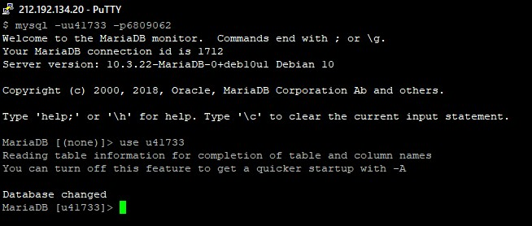
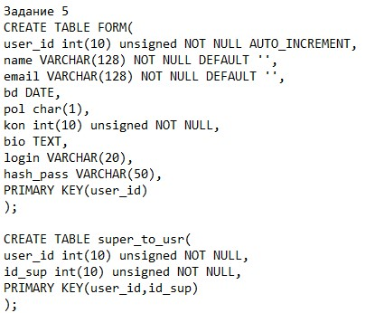
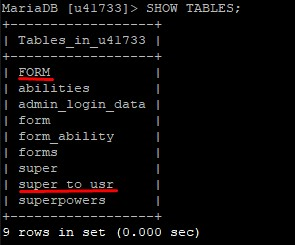
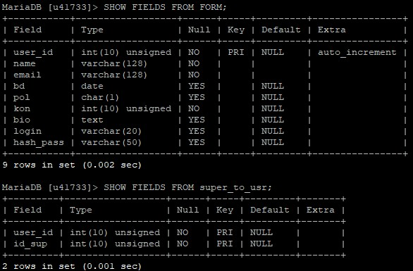
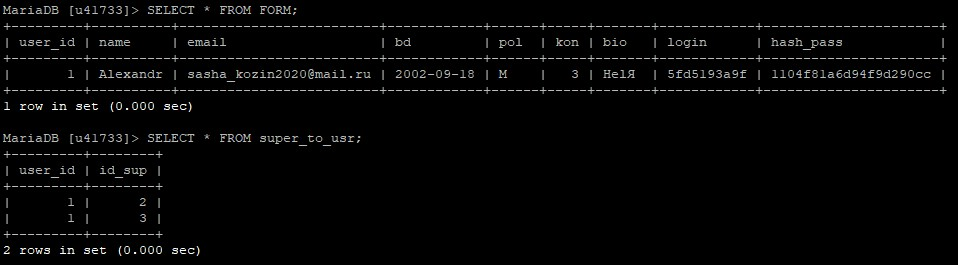

Скрытая страница!
SHOW DATABASES; - список баз данных
SHOW TABLES; - список таблиц в базе
SHOW COLUMNS FROM form/super; - список столбцов в таблице
SHOW TABLE STATUS; - статистика по всем таблицам в базе
SHOW TABLE STATUS [FROM db_name]; - статистика по всем таблицам в базе
SELECT * FROM table_name; - данные в таблице
SHOWFIELDS FROM table_name; - поля таблицы
Запускаем клиент MySQL в командной строке и потом подключаемся к бд
Создадим таблицу для сохранения данных(т.к. я уже создал таблицу приложу код)
Проверям, что таблицы создались
Структура таблиц FORM & super_to_usr
Отправил 1-у форму, введеные данные сохраняются в таблицах
